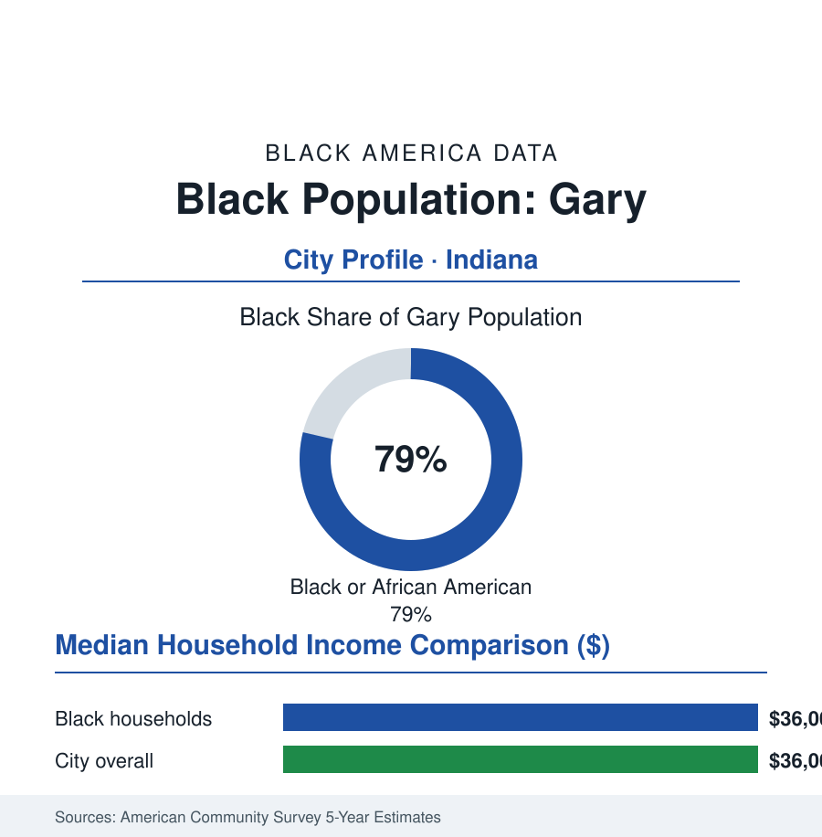

Black Cities
Black Gary: 53,000 People in the City Steel Built and Left
Founded by U.S. Steel in 1906, Gary drew generations to the mills — and became a majority-Black city just as the industry's collapse arrived. The census portrait.

Gary's Black community numbers roughly 53,000 people — about 79% of the city's 68,000 residents — in the Indiana steel city on Lake Michigan's south shore, thirty miles from Chicago's Loop. Gary was founded by a corporation in 1906, peopled by the Great Migration's mill hands, and governed by Black mayors since 1968 — and its modern data are the steel file's home address: the city the industry built, filled, and then half-emptied within one working lifetime. This profile reads its numbers. No American city binds the themes of this atlas — migration, industry, self-government, abandonment — tighter together.
The Company Town and the Migration
Gary began as U.S. Steel's plat: the company bought the lakeshore dunes in 1905, laid out the town, and built the Gary Works — for decades the largest steel complex on earth — beside it. The workforce came from everywhere the steel article describes: the Black migration's Indiana line (the recruiters and the word-of-mouth chains from the South filling the labor departments from the First World War onward), the European immigration of the same decades filling the skilled lines, the city sorting itself in the classic pattern (the Black community concentrated in the Midtown district south of the tracks, the housing covenants and the mill's department system drawing the era's usual map). The political succession ran on the steel file's rails: the community's institutions thickening with the wages (the churches, the NAACP, the Black press of the Gary American, the sorority and lodge rows), the civil-rights era's organizing converting numbers into office — Richard Hatcher's 1967 victory making Gary one of the first big American cities with a Black mayor, his twenty years in office and the 1972 National Black Political Convention in Gary (ten thousand delegates in the steel city's high-school gym — the movement's high-water convention) writing the city into the political canon at exactly the moment its economic base began the long contraction. The population series tells the hinge: the city peaked near 180,000 in 1960, its Black share rising every decade as the mills' white workforce suburbanized to the Merrillvilles and the mill itself mechanized the labor gangs away.
The Long Contraction and the Present Ledger
Gary's modern data are deindustrialization's textbook rows: population down by almost two-thirds from the peak in the current census, the mill employing a small fraction of its tens of thousands (the Gary Works still operating — the integrated mill's rump workforce in the low thousands), median household income in the mid-thirty-thousands, poverty around a third of residents in the survey estimates, the housing stock carrying the abandonment data's heavy numbers (thousands of vacant structures in the city's counts — the blight-removal programs' demolition lists the largest per capita in the state), the school district under state control in the recent years' governance record. And the counter-data hold their own lines, as they do across this atlas's Rust Belt: the location itself (the lakefront, the dunes' national park at the city's edge since 2019, the Chicago market thirty miles and one commuter-rail line away — the South Shore Line's electrified thread to the Loop the city's prospectus in steel), the land bank and the hard-rock redevelopment attempts, the hometown generation's institutions persisting (the churches, Indiana University Northwest's campus, the Jackson family's most famous sons as the city's global brand, the annual pilgrimages to the Cleveland Street house a heritage economy in embryo), and the stubborn demographic fact at the table's center: 53,000 people still here, a Black city governing itself through a half-century of the economy's exit, its median voter a steelworker's grandchild holding a house the mill wages bought. The recovery literature's Gary chapter is unwritten; the survival chapter is fifty years long and counting.
Reading Gary's Numbers
Seventy-nine percent of 68,000, in a city a corporation founded as a labor camp with a flag: Gary is the cities file's purest measure of the steel century's full arc — recruitment, wages, political power, abandonment — run inside one set of city limits. The census counts what remains. What remains is a city that outlasted the industry that built it, which is either the end of the story or, on the lakefront's evidence, a very long middle.
More in Black Cities
Black Atlanta: Population, Distribution, and Growth of a Black Metropolis
Metro Atlanta holds more than two million Black residents — roughly one in three, second only to New York. The suburban distribution, migration history, and composition of Black Atlanta in the census data.
Black New York: The Largest Black Population in America
The New York metropolitan area holds about 3.4 million Black residents — more than any metro in the nation — and the city itself about two million. The census profile.
Black Washington: The District and the Metro
The Washington metro holds about 1.6 million Black residents, and the District itself — long a majority-Black city — now records a Black share near 41 percent. The census profile.
Source: U.S. Census Bureau, 2020 Census and American Community Survey 5-year estimates; City of Gary; Indiana University Northwest urban studies; U.S. Steel Gary Works data.